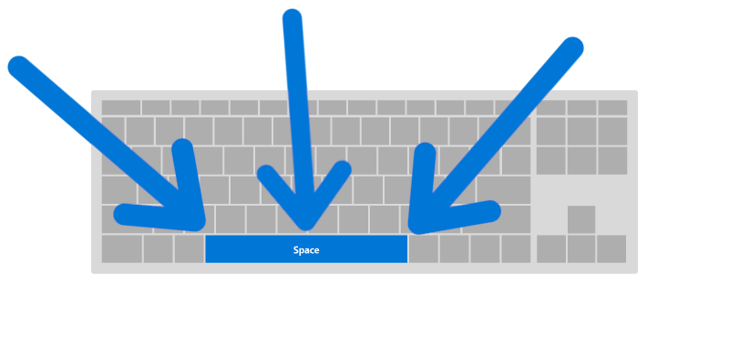

Bienvenido a Flappy Bird
Instrucciones
Tu objetivo en este juego será intentar alcanzar la máxima puntuación posible esquivando todos los obstáculos
Si te chocas con algún obstáculo estas eliminado y tendrás que volver a empezar
Pulsa la tecla ESPACIO para empezar a volar y la misma para mantenerte en el aire y esquivar los objetos.
